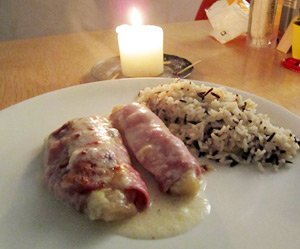

Endivie-Schinken-Rollen
4 von 6Endivie längs halbieren und kurz blanchieren. Eine klasische Béchamelsauce zubereiten. Endivie in Schinken einrollen und in eine Auflaufform geben. Béchamelsauce darüber geben und mit Käse bestreuen. Im Ofen gratinieren und mit Reis servieren.
